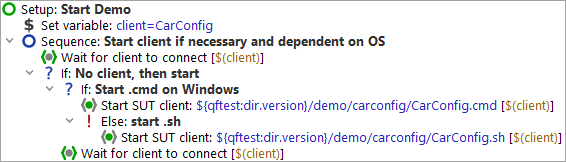
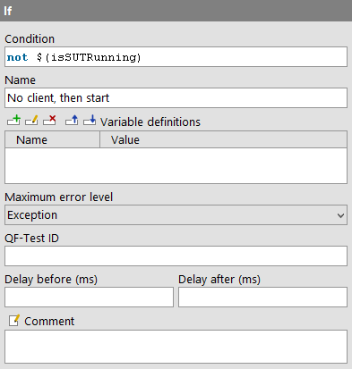

| Version 6.0.3 |
You already came across 'If' and 'Else' nodes in the 'Setup' sequence in the chapter Starting the Application. Let's have a closer look at the details of the nodes.
|
|  | ||
|
| Figure 8.1: Setup Sequence with if-else structures | ||
By means of an 'If' node you can control whether certain nodes
will be executed or not. In our case whether to start the SUT application.
First, we need to find out if the client is already running.
This is the job of the 'Wait for client to connect' node, which writes the result
of its inquiry, either true or false, into a variable named
isSUTRunning.
|
|  |
||
|
| Figure 8.2: 'Wait for client to connect' writes the result into the variable "isSUTRunning" | ||
The 'If' node has a 'Condition' attribute where you'll find an
expression evaluating the result variable isSUTRunning. As we want to refer
to its value we need to use the syntax $() (see also note on variable syntax
in chapter section 6.1).
|
|  | ||
|
| Figure 8.3: 'If' node evaluates the variable | ||
Depending on whether the client is already running or not QF-Test will execute the nodes nested in the 'If' node.
If you like you can check the value of the variable isSUTRunning in the
variable bindings table. The first time it will have the value false
so that the condition not $(isSUTRunning) will become
true and the SUT will be started. The second time it will be true and the if-condition
will fail. The nodes nested in the 'If' node will be skipped.
Within the first 'If' node there is a second one checking the type of operation system - either Windows or else a different one (Unix or Mac). This is where the 'Else' node comes in, which will be entered if the condition test of the If node fails (in our case: the operation system is not Windows).
For checking the operating system you can directly resort to a QF-Test variable:
QF-Test stores the information about the operation system in a group variable
where the group is called 'qftest' and the variables 'linux', 'macos' or 'windows',
respectively. The syntax for accessing group variables is ${group:varname},
e.g. ${qftest:windows}.
| Last update: 9/6/2022 Copyright © 2002-2022 Quality First Software GmbH |